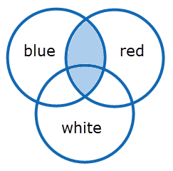
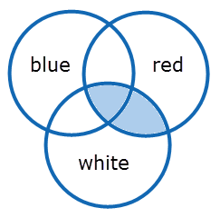
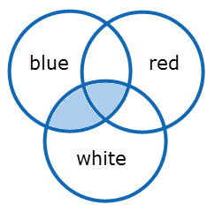
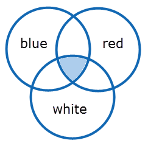

See the Venn Diagrams (http://en.wikipedia.org/wiki/Venn_diagram) below for a visual overview of the search results:
|
blue AND red |
 |
|
red AND white |
 |
|
blue AND white |
 |
|
blue AND red AND white |
 |
Though all your search terms will be included in the results, you may be looking for specific combinations of words or a particular proximity of the search terms. In that case, it is recommended to use phrases or the Within operator, to find more contextually related search results. For the Within operator, the position of the terms is vital. Use the Within operator if you want to specify how close the search terms are connected with each other. For more information about the Within operator, see Within Operator.
When two or more terms are next to each other with no intervening operator, it is a phrase. For example, 'apple pie' will only find documents with the words 'apple' and 'pie' next to each other. When it is not relevant where 'apple' or 'pie' are located in the file, use 'apple AND pie' as the search query.
|
Syntax |
Semantics |
Recommended use |
|---|---|---|
|
left_query AND right_query (left_query) AND (right_query) |
Where AND combines two search queries such as a term, phrase or another query. For clarity, the queries can be placed between brackets. Please be aware that sometimes using brackets can influence the search results. |
Narrow your search and look for terms that have different meanings. The more queries you combine using AND, the fewer files you get. Only files with all terms you searched on will be retrieved. Use phrases to make your results more specific. |
|
left_query AND NOT right_query |
Where AND is added to the NOT operator to connect two queries. |
Narrow your search and exclude terms often connected to your search. |
|
"AND" |
Wrap the AND operator in double quotes, so it loses its special meaning. |
If you want to search for the term 'and'. |
Examples
|
Example of query |
Results |
Results Explained |
|---|---|---|
|
president AND america |
'president', 'america' |
Will only find files that contain both 'president' and 'america'. |
|
global warming AND climate change AND world |
'global warming', 'climate change', 'world' |
AND is generally used to join different kinds of concepts, different aspects of a question. |
|
apple AND NOT pear |
Only files that contain the term 'apple'. |
Files that contain both 'apple' and 'pear' will not be found. |
|
bow "and" arrow |
'bow and arrow' |
Wrap the AND operator in double quotes, so it loses its special meaning. |
|
war W/1 peace |
'war peace' and 'peace war' |
The W/n operator ensures that the terms 'war' and 'peace' appear close to each other. |